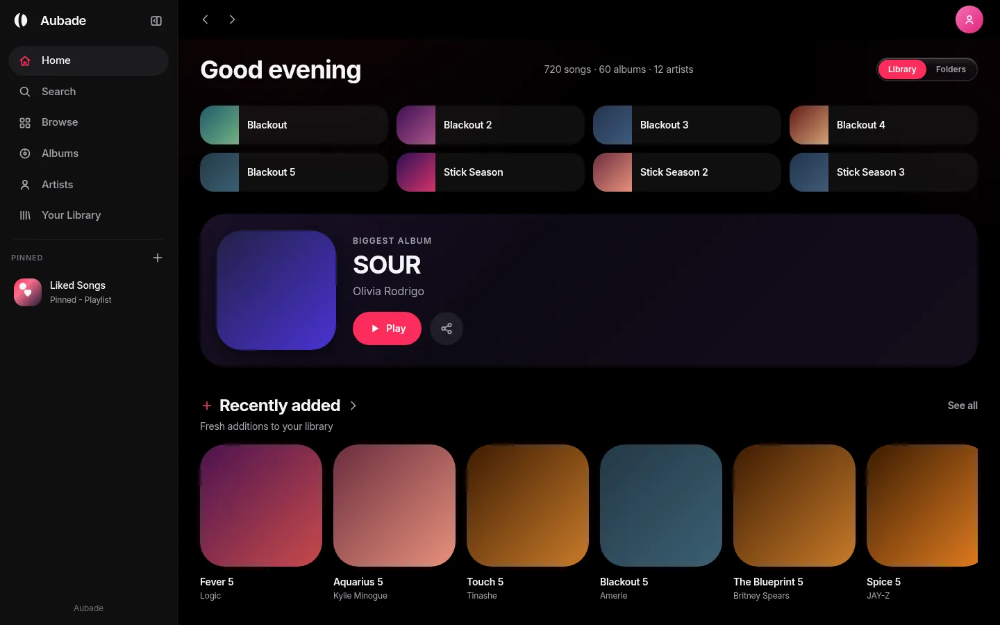
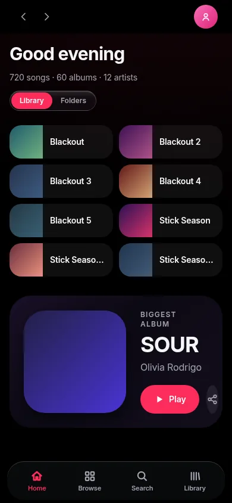

It reads your tags
Titles, artists, albums, years and embedded artwork come out of the files themselves. The reading happens on a worker, so a folder with thousands of tracks does not freeze the page while it indexes.
Point Aubade at the folder your music already lives in. It reads the tags and the artwork straight from your files and gives you albums, artists, playlists, synced lyrics and a now-playing screen that takes its colour from the cover.
Titles, artists, albums, years and embedded artwork come out of the files themselves. The reading happens on a worker, so a folder with thousands of tracks does not freeze the page while it indexes.
An .lrc file beside a track scrolls line by line as it
plays. When a file's timing is a little out, nudge it forward or
back without leaving the song.
Now playing takes its palette from the artwork, bucketing the cover by hue rather than averaging it — averaging pixels gives you mud, and this gives you the colours that are actually in the sleeve.
Playlists, liked songs, the queue and the whole index live in the browser's own storage. Close the tab, come back tomorrow, and the library is still there.
A floating tab bar and a floating player, both measured off a real phone layout rather than guessed at, and every screen checked at 390 pixels wide before it shipped.
There is no server to talk to and no account to make. Your files are read from disk by the browser, and that is as far as they go.
One layout with one breakpoint. The rail becomes a floating tab bar, the player becomes a card above it, and nothing is dropped on the way down.


Runs in Chrome, Edge, Brave and Firefox. Nothing to install.